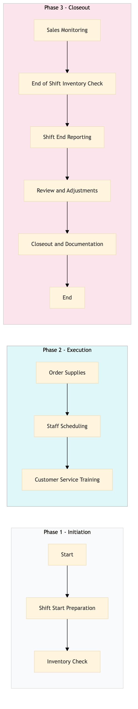

| Role | Steps |
|---|---|
| Bar Manager | 1.1 1.2 2.1 2.2 2.3 3.1 3.2 3.3 3.4 3.5 |
| Bar Staff | 1.2 2.3 3.2 |
| Step | Name | Role | System | Input | Output | KPI | Dec? | Exc? | Pain Point / Risk |
|---|---|---|---|---|---|---|---|---|---|
| 1.1 | Shift Start Preparation | Bar Manager | Oracle OPERA Cloud | Shift schedule, previous day's sales report | Shift checklist, inventory count sheet | Less than 5 minutes | N | Y | Inaccurate inventory counts leading to stockouts or overstocking. |
| 1.2 | Inventory Check | Bar Staff | Oracle OPERA Cloud | Inventory count sheet | Updated inventory levels in Oracle OPERA Cloud | Less than 10 minutes | Y | N | Manual errors in inventory tracking. |
| 2.1 | Order Supplies | Bar Manager | Birchstreet Procurement | Inventory levels, supplier information | Purchase order confirmation | Less than 30 minutes | Y | N | Delays in supply delivery affecting service quality. |
| 2.2 | Staff Scheduling | Bar Manager | Oracle OPERA Cloud, Workday HCM | Shift schedule, employee availability | Scheduled shifts in Oracle OPERA Cloud | Less than 15 minutes | N | Y | Staff shortages or overstaffing leading to inefficiencies. |
| 2.3 | Customer Service Training | Bar Manager | Oracle OPERA Cloud, Knowcross HotSOS | Training materials, employee list | Trained staff, updated training records in Oracle OPERA Cloud | Less than 1 hour | N | Y | Inconsistent service quality due to lack of training. |
| 3.1 | Sales Monitoring | Bar Manager | Oracle OPERA Cloud, IDeaS G3 RMS | Current sales data | Sales report, trend analysis | Less than 10 minutes | Y | N | Inability to track sales trends affecting inventory decisions. |
| 3.2 | End of Shift Inventory Check | Bar Staff | Oracle OPERA Cloud | Inventory count sheet, end-of-shift report | Updated inventory levels in Oracle OPERA Cloud | Less than 10 minutes | Y | N | Manual errors in inventory tracking. |
| 3.3 | Shift End Reporting | Bar Manager | Oracle OPERA Cloud, Microsoft Power BI | Sales report, inventory levels | Shift summary report, performance metrics | Less than 15 minutes | N | Y | Incomplete or inaccurate reporting affecting decision-making. |
| 3.4 | Review and Adjustments | Bar Manager | Oracle OPERA Cloud, Birchstreet Procurement | Shift summary report, supplier information | Adjusted inventory levels, updated procurement orders | Less than 30 minutes | Y | N | Inadequate adjustments leading to stockouts or overstocking. |
| 3.5 | Closeout and Documentation | Bar Manager | Oracle OPERA Cloud, Workday HCM | Shift summary report, employee attendance | Closed shift record, updated employee records in Oracle OPERA Cloud | Less than 10 minutes | N | Y | Incomplete documentation affecting payroll and compliance. |
This process outlines the operations and cocktail service procedures at a full-service Marriott hotel using Oracle OPERA Cloud PMS. It ensures efficient bar management, including inventory control, staff scheduling, and customer service.